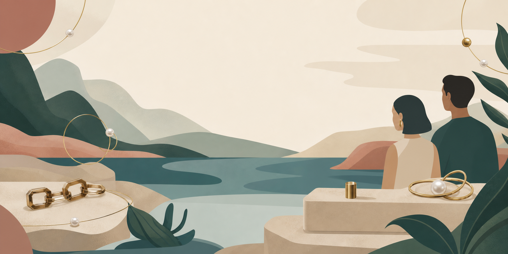

Brand story
We believe jewelry should feel intimate before it feels precious.
Every piece starts as a small study in contrast: soft curves, bright edges, quiet detail, and a finish made to live close to the skin.
Explore the collection- Services
- Handmade jewelry / Small-batch drops / Custom moments
- Studio
- Slow fabrication
Soft polish
Made with care - Materials
- Sterling silver / Gold tones / Found textures
Scroll for the story

The brand
A quiet ritual of making, polishing, and choosing what stays.
Use this space for a short brand video, studio footage, or a poetic material story. Until final assets arrive, the page behaves like a film still so the rhythm and mood are already locked.